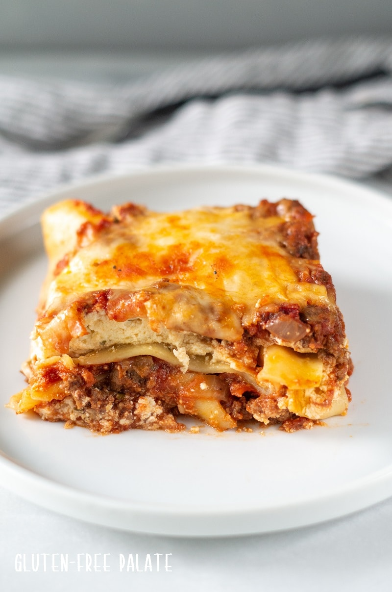

Gluten-free Lasagna!

Description
We’ve been enjoying lasagna for years. My dad used to make it at least once a month,
and then for Christmas. We’ve made some adjustments to this family lasagna recipe
that we think you’ll love. Including adding in pro-tips and shortcuts for getting
your lasagna in the oven quicker.
With this gluten free lasagna recipe, you can add addition ingredients like chopped
veggies, spinach, or other cheese varieties. This lasagna is great as-is but you can
definitely customize it to fit your palate.
Ingredients
- 5 oz. Gluten-free noodles, cooked per packaging (or use oven-ready)
- 1 lb. ground beef (or ground turkey)
- 1 cup chopped onion
- 2 cloves garlic, minced
- 1 can (14.5 oz.) crushed tomatoes
- 8 oz. tomato sauce
- 6 oz. tomato paste
- 1 tablespoon dried basil
- 1 teaspoon dired oregano
- 1 teaspoon salt
- 1 teaspoon pepper
- 1 egg, whisked
- 2 cups ricotta cheese
- 1/2 cup grated Parmesan
- 1 tablespoon dried parsley
- 8 oz. shredded Mozzarella
Steps
- Preheat oven to 375 degree F. Spray a 9 x 13 - inch baking pan with oil; set aside.
- Cook noodles according to package; set aside. Skip this step if you’re using oven ready
gluten-free lasagna noodles.
- For the sauce: In a large saucepan cook beef, onion, and garlic until the meat is brown.
Break the meat apart as it cooks.
- Add the un-drained tomatoes, tomato sauce, tomato paste, basil, oregano, salt and pepper
and stir until combined.
- Bring the sauce to a boil then reduce the heat and simmer for 5 minutes, stirring occasionally.
- For the ricotta filling: combine the whisked egg, ricotta, Parmesan cheese, and dried parsley.
- To layer the gluten free lasagna: Spread a little sauce on the bottom of the pan. Add a layer of lasagna noodles
over the sauce. Spread half the ricotta mixture over the noodles. Then spread half the sauce mixture over the
noodles. Add the second layer of lasagna noodles, ricotta mixture, and sauce mixture. Top with shredded mozzarella.
- Place the lasagna pan on a baking sheet and bake for 30 to 35 minutes or until heated through. If you’re using oven-ready noodles,
cover the lasagna with foil and bake for 40-45 minutes. Remove the foil, then bake an additional 10 minutes.
- Remove from the oven and let rest for 10 minutes before serving.
NOTE: I copied and pasted this text from other websites on the internet as coding practice in HTML and CSS.